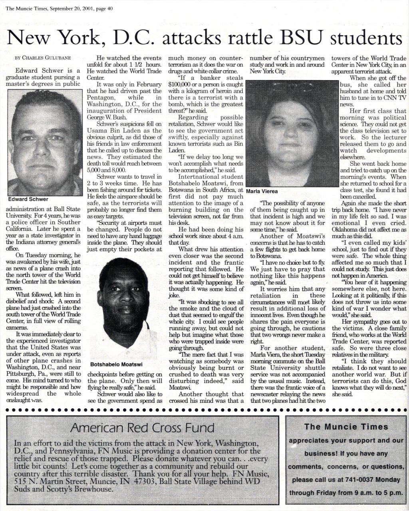

HN-856 · September 20, 2001 · War, Conflict & Security > Terrorism & Political Violence > Attacks involving civilian aircraft
Source: Muncie Times, p. 39 — original page.
Report: A profile followed a former investigator connected with Indiana as he watched a second aircraft strike the World Trade Center and feared additional attacks while news from Washington and Pennsylvania remained incomplete.
Assessment: An eyewitness account of watching live broadcasts, not firsthand observation from an attack site or an attribution of criminal responsibility. The sequence of reports illustrates uncertainty; the later federal inquiry supplies a different evidentiary level.
Authentic images retrieved from Hoosier State Chronicles (Indiana State Library). Article crops are located using the archive's own OCR word coordinates and rendered at native crop resolution; article clips are assembled from the archive's own article-block images; page images marked "archive tiles" are stitched from the archive's own tiled page service at its 256-px tile cap; page images marked "issue PDF" are single pages rasterised from the archive's own issue PDF, with the page chosen by matching the headline against the PDF's text layer; page scans are reduced-size access renditions. No images were generated, mocked, or retouched.

Status: Archive images acquired
Authentic archive-owned image renditions were retrieved for this record and are displayed above. The source-acquisition manifest preserves the original pre-acquisition feasibility assessment.
URL (preserved verbatim): https://newspapers.library.in.gov/?a=d&d=BALLMT20010920-01.1.39
Saved research report: Historical_Newspaper_Event_Research_853-877_2026-10-23.md
Evidence note: A newspaper report means a historical publication made a claim; it does not establish that claim as fact. Contemporary reporting is separated from later scholarly context and our own assessment.